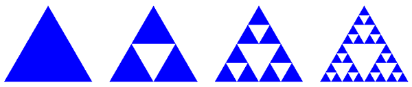
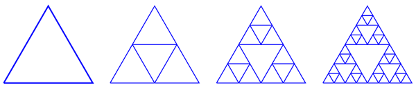
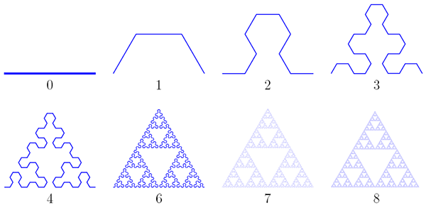

Треугольник Серпинского
Этот фрактал описал в 1915 году польский математик Вацлав Серпинский. Чтобы его получить, нужно взять (равносторонний) треугольник с внутренностью, провести в нём средние линии и выкинуть центральный из четырех образовавшихся маленьких треугольников. Дальше эти же действия нужно повторить с каждым из оставшихся трех треугольников, и т. д. На рисунке показаны первые три шага, а на JavaScript-демонстрации вы можете потренироваться и получить шаги вплоть до десятого.

Выкидывание центральных треугольников — не единственный способ получить в итоге треугольник Серпинского. Можно двигаться «в обратном направлении»: взять изначально «пустой» треугольник, затем достроить в нём треугольник, образованный средними линиями, затем в каждом из трех угловых треугольников сделать то же самое, и т. д. Поначалу фигуры будут сильно отличаться, но с ростом номера итерации они будут всё больше походить друг на друга, а в пределе совпадут.

Следующий способ получить треугольник Серпинского еще больше похож на обычную схему построения геометрических фракталов с помощью замены частей очередной итерации на масштабированный фрагмент. Здесь на каждом шаге составляющие ломаную отрезки заменяются на ломаную из трех звеньев (она сама получается в первой итерации). Откладывать эту ломаную нужно попеременно то вправо, то влево. Видно, что уже восьмая итерация очень близка к фракталу, и чем дальше, тем ближе будет подбираться к нему линия.
